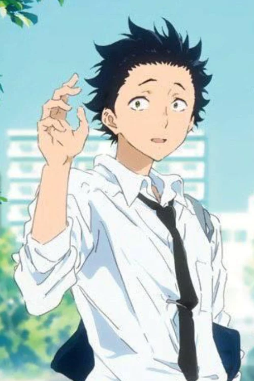
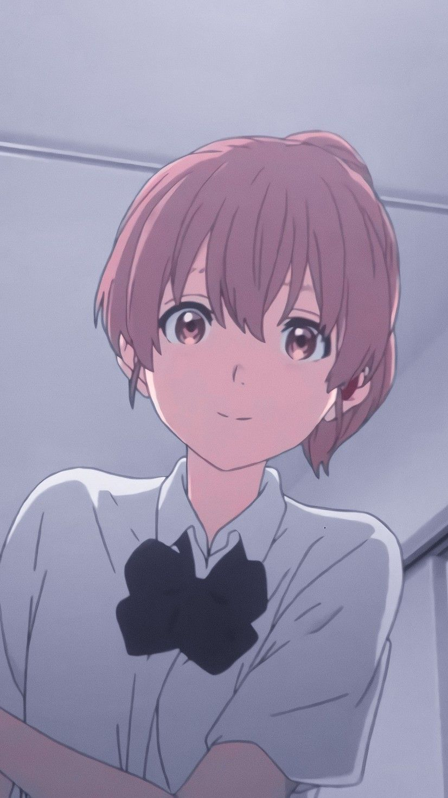
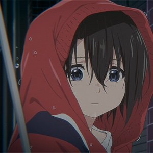
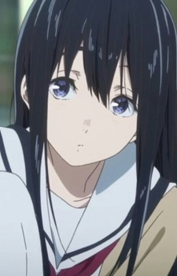
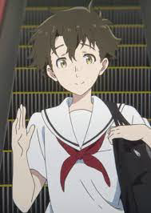
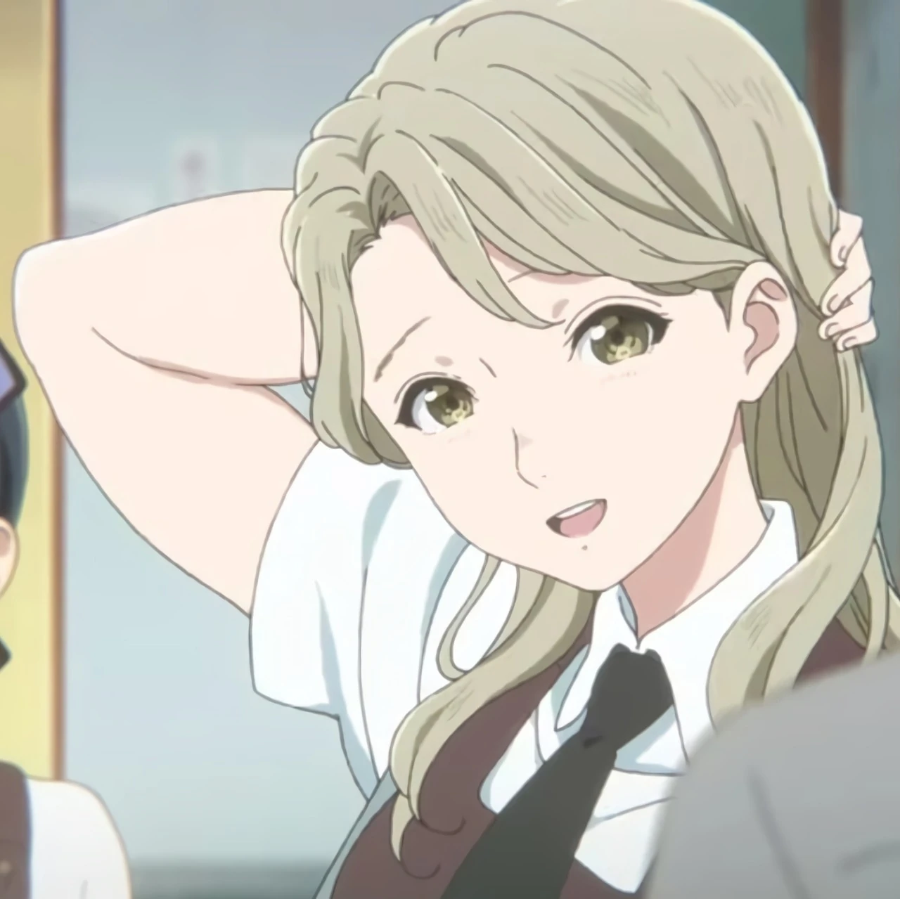

This site is all about the movie A Silent Voice.
When a grade school student with impaired hearing is bullied mercilessly, she transfers to another school. Years later, one of her former tormentors sets out to make amends.
“Back then, if we could have heard each other’s voices, everything would have been so much better.” -Shoya Ishida
| Shoya Ishida |  |
|---|---|
| Shouko Nishimiya |  |
| Yuzuru Nishimiya |  |
| Tomohiro Nagatsuka | |
| Naoka Ueno |  |
| Miyoko Sahara |  |
| Toshi Manshibasa | |
| Miki Kawai |  |
Email: a_silent_vocie@gmail.com
Phone: 911-600-090